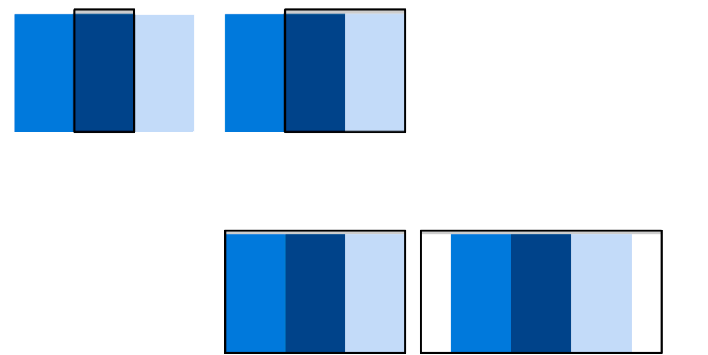

Tipografía responsive
El texto es parte imprescindible de la web. Productos, servicios, lo
que haces, lo que se quiere lograr con el proyecto web se muestran
mediante el texto.
¿Cuál es entonces el primer objetivo que debemos lograr con el
texto?
• Lo mas importante es que el texto se pueda leer.
La legibilidad
Se define como: cualidad de lo que es legible.
• Básicamente es la facilidad con que se puede leer y comprender un
texto.
• En un sentido más amplio es la aptitud de un texto de ser leído
fácil y cómodamente, y esta aptitud en la web hace referencia a la
familia tipográfica, color y contraste de la tipografía, líneas de
palabras, párrafos y otros elementos como imágenes, videos,
animaciones etc.
Estudios concluyen que es un error costoso si el texto es menor a
16px.
• 16 píxeles no es un tamaño grande, es el tamaño por defecto en
muchos navegadores. 16px o 18px deben ser las primeras medidas a
probar.
• Con un consumo de contenido cada vez mayor en móvil, el tamaño de
fuente para móvil también debe permitir una lectura cómoda. Los
usuarios suelen tener el texto más cerca de los ojos cuando navegan en
móvil que cuando lo hacen en escritorio.
Formularios responsivos
Un formulario HTML es una sección de un documento que contiene
contenido normal, código, elementos especiales llamados controles
(casillas de verificación (checkboxes), radiobotones (radio buttons),
menúes, etc.), y rótulos (labels) en esos controles.
Look & Feel
El Look and feel es una expresión inglesa que puede tener diferentes significados, dependiendo del contexto en que se utilice.
Significa textualmente el "aspecto y tacto" de determinados productos.
En contextos de desarrollo, el significado más apropiado sería “aspecto y comportamiento”.
El look and feel de un proyecto web también se puede describir como su “personalidad”. La cual debe coincidir con la actitud la empresa y sus objetivos sin dejar de encajar en las expectativas del usuario.
Aunque existe cierta libertad de diseño, los usuarios pueden confundirse por los proyectos web cuyo Look&Feel no cumple con sus expectativas para determinada empresa o industria.
El look&feel puede ser descrito usando adjetivos. Por ejemplo:
Amistoso.
Accesible.
Profesional.
Experimentado.
Exclusivo.
Innovador.
Elegante.
Alta tecnología.
Poderoso.
Look
El aspecto o look de las interfaces se define por los siguientes componentes:
Paleta de colores
Imágenes
Diseño
Opciones de fuente
Estilo general
Disposición de los elementos
Feel
El comportamiento de las interfaces está influido por la interacción, que se determina por las siguientes características:
El movimiento y la respuesta de los componentes dinámicos, como menús desplegables, botones, formas y galerías
Los efectos de sonido
La rapidez con la que las páginas y las imágenes se cargan
Patrones de RWD
Los patrones de diseño web adaptables evolucionan rápidamente, pero existen varios
patrones establecidos que funcionan bien en los diferentes equipos de escritorio y
dispositivos móviles.
La mayoría de los diseños que se usan en las páginas web responsivas se pueden
categorizar dentro de cinco clases de patrones:
Mostly Fluid
El órigen del nombre “mayormente líquido” es debido a que la
estructura principal de los layouts no cambia realmente hasta
dimensiones mobile donde se aplica la caída de columna. Como
hemos comprobado las columnas se vuelven liquidas con su
contenido hasta alcanzar el ancho máximo.
El patrón Mostly fluid consiste, principalmente, en una cuadrícula
fluida. Por lo general, en las pantallas grandes o medianas se
mantiene el mismo tamaño y simplemente se ajustan los márgenes
en las más anchas.
En la vista más pequeña, cada div de contenido se apila según vaya
creciendo la pantalla, los distintos bloques se agrupan ocupando toda
la pantalla disponible.
En pantallas más grandes, el diseño es el mismo pero queda
agrupado dentro de un contenedor que queda centrado en la página
con un tamaño fijo de ancho.
Una de las mayores ventajas de este patrón es que, en general, solo
se necesita un punto de interrupción entre las pantallas grandes y las
pequeñas.

Column Drop
A diferencia del patrón Mostly Fluid, el tamaño total de los elementos
en esta disposición tiende a permanecer constante.
En este diseño la adaptación a distintos tamaños de pantalla se basa
en apilar las columnas.
En el caso de los diseños con varias columnas de ancho completo,
durante el proceso de colocación de columnas éstas únicamente se
colocan de forma vertical debido a que el ancho de la ventana es
demasiado reducido para el contenido.
En un momento dado, todas las columnas se apilan verticalmente. La
selección de puntos de interrupción para este patrón de diseño
depende del contenido y cambia para cada diseño.
Como sucede con los ejemplos que son principalmente fluidos, el
contenido se coloca verticalmente en la vista más pequeña, pero a
medida que se expande la pantalla a más de 600 píxeles, los divde
contenido principal y secundario ocupan todo el ancho de la pantalla.
El orden de los divse configura con la propiedad CSS de orden. Con
800 píxeles, se muestran los tres divde contenido en todo el ancho de
la pantalla.

Layout Shifter
El patrón Layout shifter es el más adaptable, ya que posee varios
puntos de interrupción en diferentes anchos de pantalla.
La clave para este diseño es el desplazamiento del contenido, en
lugar de su reprocesamiento y colocación debajo de otras columnas.
Debido a las diferencias significativas entre cada punto de
interrupción principal, es más complejo de mantener, y es posible que
se deban realizar cambios dentro de los elementos, no solo en el
diseño de contenido general.
Este es uno de los patrones más complejos. Consiste en mover los
bloques de contenido cambiando totalmente el Layout, de ahí el
nombre del patrón.
En las pantallas más pequeñas, el contenido se apila verticalmente,
pero cambia considerablemente a medida que se agranda la pantalla,
con un div a la izquierda y dos div apilados a la derecha.

Tiny Tweaks
El patrón Tiny tweaks permite realizar pequeños cambios en el
diseño, como ajustar el tamaño de la fuente, cambiar el tamaño
de las imágenes o desplazar el contenido de maneras muy poco
significativas.
Funciona correctamente en diseños con una sola columna,
como los sitios web lineales de una sola página y los artículos
con mucho texto

Off Canvas
El patrón Off canvas coloca contenido menos usado (tal vez menús de
navegación o de apps) fuera de la pantalla y solo lo muestra cuando
el tamaño de la pantalla es suficientemente grande.
En las pantallas más pequeñas, el acceso al contenido es posible con
solo a un clic.
En lugar de que el contenido se apile verticalmente, se usa una
declaración transform: translate(-250px, 0) para ocultar dos de los div
de contenido fuera de la pantalla mediante la propiedad.
Se usa JavaScript para mostrar los divs agregando una clase abierta al
elemento para hacerlo visible. A medida que se ensancha la pantalla, el
posicionamiento fuera de esta se elimina de los elementos y estos se
muestran dentro de la ventana de visualización visible.
Hay que tener en cuenta que la función flex-flow: row nowrap de flexbox no
es compatible con Safari para iOS 6 y el navegador de Android por lo que se
debe recurrir al posicionamiento absoluto.

Unidades de medida
Las medidas en CSS se emplean, entre otras cosas,
para definir la altura, anchura y márgenes de los
elementos y para establecer el tamaño de letra del
texto.
Todas las medidas se indican como un valor numérico
entero o decimal seguido de una unidad de medida (sin
ningún espacio en blanco entre el número y la unidad
de medida).
CSS divide las unidades de medida en dos grupos:
absolutas y relativas.
Las unidades absolutas establecen de forma completa
el valor de una medida, por lo que su valor real es
directamente el valor indicado.
Las medidas relativas definen su valor en relación con
otra medida, por lo que para obtener su valor real, se
debe realizar alguna operación con el valor indicado.
Si el valor es 0(cero), la unidad de medida es opcional.
Si el valor es distinto a 0 (cero) y no se indica ninguna
unidad, la medida se ignora completamente.
Algunas propiedades permiten indicar medidas
negativas, aunque habitualmente sus valores son
positivos. Si el valor decimal de una medida es inferior
a 1, se puede omitir el 0 de la izquierda (0.5em es
equivalente a .5em).
Unidades de longitud absoluta

Unidades de longitud relativas

Reset y Normalize
User Agent
Un user-agent es una aplicación informática que
funciona como cliente en un protocolo de red.
El nombre se aplica generalmente para referirse a
aquellas aplicaciones que acceden a la World
Wide Web.
Los agentes de usuario que se
conectan a la Web pueden ser
desde navegadores web hasta
los web crawler de los
buscadores, pasando por
teléfonos móviles, lectores de
pantalla y navegadores en
Braille usados por personas con
discapacidades.
Reset CSS
El consorcio W3C, junto con su especificación de
CSS 2.1 del 23 de abril de 2009, publicó en su
recomendación, un valor por defecto para cada
propiedad de CSS que deberían adoptar los
agentes de usuario.
Sin embargo, algunos navegadores hicieron caso
omiso a sus indicaciones, los diseñadores web se
han visto obligados a recurrir al uso de trucos para
garantizar la correcta visualización en la mayoría
de navegadores.
La respuesta está en el restablecimiento de CSS:
básicamente, una manera de mantener los
resultados lo más universales posible al eliminar
cualquier regla y omisión basadas en el navegador
antes de que se aplique su CSS.
Los Reset CSS son unas hojas de estilo en cascada
que se suelen incluir en un documento HTML, para
minimizar las diferencias visuales que se dan al
mostrar una misma página web, en diferentes
navegadores.
Esto porque cada navegador implementa su hoja
de estilos propia e interna, con determinados
valores por defecto, que no siempre siguen la
recomendación de la organización W3C.
Hay varios Reset que se pueden utilizar:
El reset de Tantek
El reset de Trípoli
El reset de Erik Meyer
Normalize CSS
Normalize es un archivo CSS cuyo objetivo es
mantener los estilos similares en los navegadores,
porque cada navegador agrega sus propios estilos
por defecto. Por ejemplo suelen agregar distintos
paddings, margins, font-sizes,etc.
Normalize CSS regulariza estos estilos y hace que
el proyecto se vea igual independientemente del
navegador donde se visualice. Además está
preparado para adaptarse completamente a
HTML5.
A diferencia de algunos CSS reset, “normalize”
preserva los valores por defecto de los
navegadores.
Además también corrige errores e inconsistencias
de los navegadores.
Normaliza estilos para una amplia gama de
elementos HTML.
Incluso mejora la usabilidad con mejoras sutiles.
SVG
Gráficos vectoriales escalables (SVG) es un lenguaje de marcado XML para describir gráficos vectoriales en dos dimensiones. Básicamente, es a los gráficos lo que HTML es al texto.
SVG es un estándar Web abierto basado en texto. Está expresamente diseñado para trabajar con otros estándares web como CSS, DOM, y SMIL.